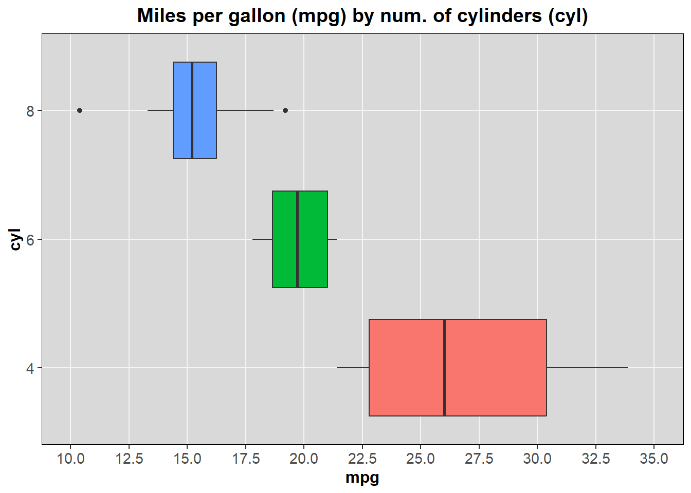
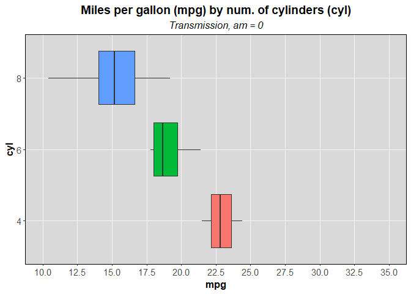
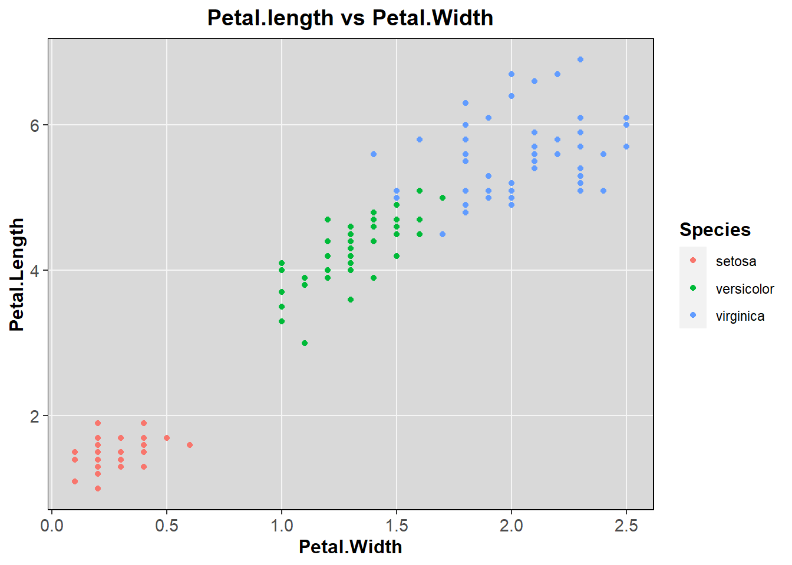
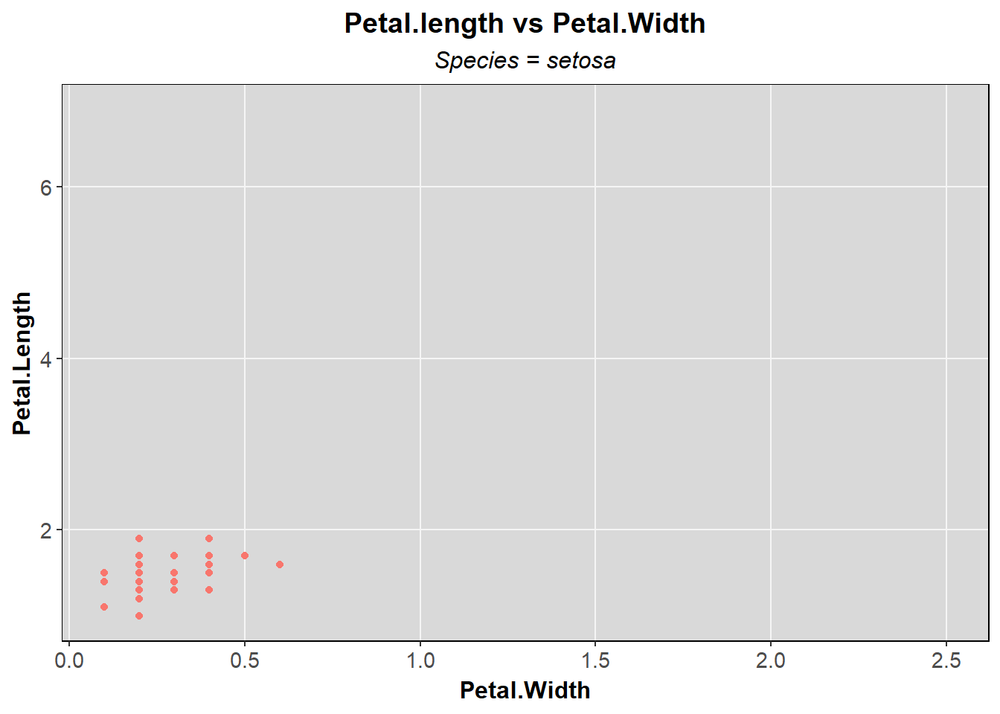
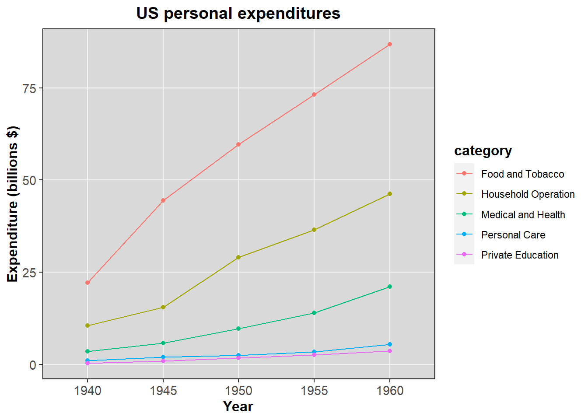
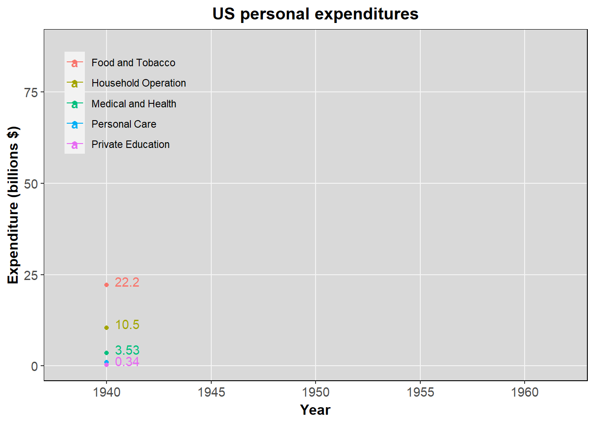

Animated plots in R with gganimate package
If you ever thought static plots to be a bit bland or not enough powerful to represent all the nuances of your data, then gganimate package is what you need to further improve your visualizations. gganimate extends the grammar of graphics as implemented by ggplot2 to include the description of animation. It does this by providing a range of new grammar classes that can be added to the plot object in order to customise how it should change with time.
transition_*()defines how the data should be spread out and how it relates to itself across time.view_*()defines how the positional scales should change along the animation.shadow_*()defines how data from other points in time should be presented in the given point in time.enter_*()/exit_*()defines how new data should appear and how old data should disappear during the course of the animation.ease_aes()defines how different aesthetics should be eased during transitions.
Install gganimate
You can install gganimate from CRAN repository with:
install.packages("gganimate")Or the the developer version from GitHub with:
devtools::install_github('thomasp85/gganimate')Packages
We start by loading the needed packages.
library(reshape2)
library(ggplot2)
library(gganimate)
library(gifski)By default, gganimate writes each animation frame to separate image files. and stops there. You can produce gif outputs by installing gifski package, or video outputs with av package. If installed, gganimate will automatically detect the rendering backend, but you can also manually choose the rendering method by setting the renderer parameter of gganimate::animate() to the desired value. See ?gganimate::animate() for more details.
Before proceding, I’ll explain some key concepts of animated data visualization.
Tweening
Animation has always been about the illusion of movement. Tweening is a major part of making that illusion look real. Tweening in animation is a short for inbetweening, and it’s the process of generating images that go between keyframes. Keyframes are the images at the beginning and end of a smooth transition.
In the context of data visualization, tweening is the process of splitting data into subsets based on a variable in the data, and calculating intermediary data states that ensures a smooth transition between the states. gganimate provides a wide range of different transitions, for different datatypes, defined by transition_*() functions. We’ll see some examples later.
Easing
In the context of animation, easing lends a natural, organic movement to motion. A linear animation (one built without easing) will move mechanically without slowing down or speeding up. As this kind of consistency in speed doesn’t occur in nature, we perceive the movement as unnatural. Objects in real life don’t start moving and maintaining the same speed throughout. They start slowly, pick up speed and slow down as they come to a halt. That’s why gganimate supports the easing of animations with ease_aes() function.
There are plenty of different easing methods, defined by an easing function and by an easing modifier. For a list of available easing functions, see ?tweenr::display_ease (tweenr package is a dependency of gganimate). Below I explain the 3 different modifiers.
- In: applies the easing function as-is.
- Out: applies the easing function in reverse.
- In-Out: the first half of the transition is applied as-is, while the last half is applied in reverse.
For a visual representation of all the combinations of easing functions and modifiers, see easing.net webpage. We’ll see some examples later.
Labeling
It can be quite hard to understand an animation without any indication as to what each point relates to. gganimate solves this by providing a set of variables for each frame, which can be inserted into plot labels using glue syntax.
Example 1: mtcars dataset
Now we’re ready for some actual animations. We start with the R prebuilt mtcars dataset.
datasets::mtcarsBelow a standard static plot of ‘mpg’ (miles per US gallon) variable by ‘cyl’ (number of cylinders) variable, built with ggplot2 . First we apply a custom theme.
Custom theme
ggplot2::theme_update(
axis.text = element_text(size = 11),
legend.background = element_blank(),
panel.background = element_rect(fill = "grey85"),
panel.border = element_rect(colour = "black", fill = NA),
panel.grid = element_line(colour = "whitesmoke"),
panel.grid.minor.y = element_blank(),
panel.grid.minor.x = element_blank(),
plot.title = element_text(hjust = 0.5),
plot.subtitle = element_text(face = "italic", hjust = 0.5),
strip.background = element_rect(colour = "black", fill = "grey85"),
strip.text = element_text(size = 10, face = "bold"),
title = element_text(size = 12, face = "bold")
)h <- ggplot(mtcars, aes(y = as.factor(cyl), x = mpg)) +
geom_boxplot(aes(fill = as.factor(cyl)), show.legend = F) +
scale_x_continuous(limits = c(10, 35), breaks = seq(10,35,2.5)) +
labs(title = "Miles per gallon (mpg) by num. of cylinders (cyl)", y = "cyl")
h
Now let’s say we want to see how the transmission type (‘am’ variable) influences the miles per gallon for each amount of cylinders. We can add an animation based on ‘am’ variable, which is categorical/binary (0 for automatic transmission, and 1 for manual transmission) with gganimate::transition_states() . This transition splits your data into multiple states based on the levels in a given column. We add the transition by simply adding a new layer to our plot, like we do in base ggplot2 .
h_anim <- h +
transition_states(states = as.factor(am), transition_length = 2, state_length = 1) +
ease_aes("cubic-in-out") +
labs(subtitle = "Transmission, am = {closest_state}")
h_anim
As you can see, the manual transmission (‘am’ = 1) is associated with a lower fuel consumption, on average, for each amount of cylinders.
With transition_length parameter we set the relative length of the transition between different states, while the relative length of the pause at each state is defined by state_length parameter. For a better animation, the easing modifier in ease_aes() was set to “in-out” for a slower start and end of each transition. Finally, a subtitle with glue syntax was added, so that the label changes whenever there’s a state transition. For a list of the available label variables for transition_states() function, see its documentation with ?gganimate::transition_states .
The glue syntax is automatically detected only when used inside ggplot2 labels functions (for example ggtitle() , labs() , etc.
We can also change the rendering parameters with animate() function. For example, below we set the number of frames to 200 (default = 100) for a smoother animation.
h_anim |> animate(nframes = 200)Example 2: iris dataset
Now we’ll build an additional visualization on iris R prebuilt dataset.
datasets::irisLet’s say we want to see what iris species have the longest and largest petals. We can draw a simple scatterplot to find out the “biggest” species.
s <- ggplot(iris, aes(x = Petal.Width, y = Petal.Length)) +
geom_point(aes(colour = Species)) +
labs(title = "Petal.length vs Petal.Width")
s
Now, this particular plot is clear and straightforward, and already fine as it is. Each species takes a specific area in the plot, and there’s almost no overlapping of data points. However, overlapping is a very common problem of scatter plots, especially when there are many data points, and creating an animation with different states can solve it, so let’s animate our iris plot.
s_anim <- s +
transition_states(Species, transition_length = 2) +
ease_aes("quadratic-in-out") +
enter_fade() +
exit_shrink() +
labs(subtitle = "Species = {closest_state}") +
theme(legend.position = "none")
s_anim
This time, custom enter and exit behaviours were set. In iris dataset, each row represents a different individual, there aren’t multiple observations of the same individual, so we don’t want the data points to move across the plot (default behaviour). If that was the case, it would appear as if data in a single measurement changes gradually as the flower being measured on somehow morphs between three different iris species, which obviously doesn’t make sense. To avoid this problem, an exit_shrink() call was added, so that the data points shrink in size and disappear when there’s a transition between states, rather than moving. Here, enter_fade() is just an aesthetic improvement (the data points start at max transparency and end up with the transparency level you set when building the plot; no transparency in this case).
Example 3: USPersonalExpenditure dataset
As final example, we’ll build an animation on a custom long version of USPersonalExpenditure R prebuilt dataset.
long_USPE <- function() {
df <- datasets::USPersonalExpenditure |> as.data.frame()
df$category <- rownames(df)
df <- reshape2::melt(df, "category")
df$variable <- ordered(df$variable)
names(df) <- c("category", "year", "expenditure")
return(df)
}
long_USPE()First, we build a static visualization.
l <- ggplot(long_USPE(), aes(x = year, y = expenditure, group = category, colour = category)) +
geom_line() +
geom_point() +
labs(title = "US personal expenditures", y = "Expenditure (billions $)", x = "Year")
l
The line plot here is already fine, and is a good representation of the increasing trends of personal expenditures from 1940 to 1960, but we can make it more visually appealing by adding a transition_reveal() call, which allows the data to gradually appear, along a given time dimension.
l_anim <- l +
geom_text(aes(label = expenditure |> round(2) |> format(nsmall = 2)), fontface = "bold", parse = T,
check_overlap = T, nudge_x = .2, nudge_y = 1) +
transition_reveal(as.numeric(year)) +
ease_aes("quadratic-in-out") +
theme(legend.position = c(0.15,0.8), legend.title = element_blank())
l_anim